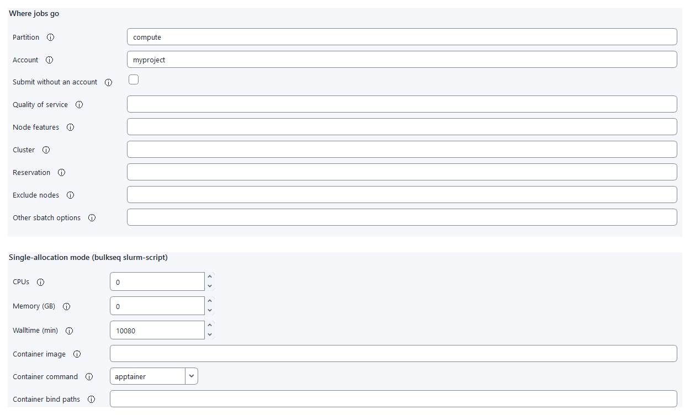

This page shows how to run a BulkSeq study on a Slurm cluster, a shared computer system that runs jobs from a queue. It is written for researchers who have used the desktop app but never a cluster. It explains the few terms you need, walks through a complete first run, and lists the centre policies that change how you set it up. The workflow, parameters and outputs are those of a run on your own computer; only the machine that runs each step changes. Every setting, command and limit is listed on Cluster settings and commands.
What a cluster is#
A cluster is many computers (nodes) that share storage. You do not run heavy work yourself: you describe a job, and a scheduler called Slurm runs it on a free node when its turn comes.
| Term | Meaning |
|---|---|
| Login node | The computer you connect to and type commands on. It is shared with other users, so it is for light work only: copying, downloading, starting jobs. |
| Compute node | A computer that runs jobs. You do not log in to it; Slurm starts your job there. |
| Slurm | The queue software. It decides which job runs where and when. |
Job and sbatch | A job is one request for CPUs, memory and time. sbatch is the command that hands a job script to the queue. |
| Partition | A queue. Each partition has its own type of node and its own time limit. |
| Walltime | The longest time a job may run. Slurm stops the job when it is reached. |
| Account | The project charged for the CPU time your jobs use. Most centres require one. |
| Terminal and SSH | A terminal is a window where you type commands. SSH connects that window to the login node, so the commands run there. |
![A flow diagram in three boxes from left to right. Your computer, running the desktop app, prepares the project, sets the cluster settings and reads the results. An arrow labelled copy project leads to the cluster login node, which runs the bulkseq commands, the downloads, the online steps such as enrichment and STRING, and the finishing run. An arrow labelled sbatch leads to the compute nodes, which run trimming, alignment, counting, DESeq2 and figures. A return arrow labelled copy results back leads from the login node to your computer.](assets/images/cluster-overview.svg)
Which way to run#
BulkSeq can use the scheduler in two ways. One allocation reserves one node and runs the whole study inside that single job. One job per step submits every workflow step as its own job. Answer two questions.
- Does your centre bill or allocate whole nodes, or refuse small jobs? Then use one allocation.
- Is the study larger than one node’s memory or time limit, or does your centre bill per core? Then use one job per step.
| One allocation | One job per step | |
|---|---|---|
| Command | bulkseq slurm-script --submit | bulkseq run --exec-profile slurm |
| Where Snakemake runs | Inside the job, on the compute node. | On the login node, for the whole study. |
| Limit | The study must fit one node and one walltime. A longer run continues when you submit it again. | Your session on the login node must stay open. |
This page follows the one-allocation route in detail. The other route is in Run one job per step instead.
Before you start#
You need an account on the cluster, with the login details your centre sends when you register (often a VPN plus SSH). The cluster itself must offer the items below. If you are unsure, ask the support desk; you can also check them yourself after you first log in (Step 3), where each command prints a path or a version when the item is present.
| The cluster must offer | Check on the login node |
|---|---|
A Linux login node with the Slurm commands sbatch and squeue | command -v sbatch squeue sacct |
| A recent Linux system library (glibc 2.28 or later) on login and compute nodes | ldd --version | head -1 |
| Storage that login and compute nodes share at the same path, for the project and the software | Ask the support desk; project and scratch storage usually qualify. |
| About 15 GB of free space while the software installs (about 7.6 GB afterwards), plus space for the project | df -h ~, or your centre’s quota command |
| Internet on the login node, or the input files copied in beforehand | curl -sI https://ftp.ebi.ac.uk |
| A way to keep a session running after you disconnect | command -v tmux (Step 3 shows how to use it) |
Your first cluster run, step by step#
The steps below use one allocation. Replace the words in capitals with your own values: USER is your user name on the cluster, LOGIN_NODE the login node’s address, PARTITION a CPU partition and ACCOUNT the project charged for the jobs. Your registration details give the first two; Step 3 shows how to look up the other two. The project folder on the cluster is ~/projects/my_project; use the storage your centre recommends for projects instead if it differs.
Step 1. Prepare the project on your computer#
In the desktop app, create the project, add the samples and the comparison, and run the pre-run checks. Preparing it here lets you see the design in the interface before anything runs. A study whose reads are downloaded from ENA or SRA accessions copies easily. If the reads are FASTQ files on your computer, edit the paths in config/samples.tsv now so they point where you will copy the files on the cluster, for example ~/projects/my_project/fastq/S1_R1.fastq.gz.
Step 2. Set the cluster settings#
In the app, open Analysis setup, then Compute resources, and expand Cluster (Slurm) settings at the bottom. Under Where jobs go, set Partition and Account. Under Single-allocation mode, leave CPUs and Memory at 0, which means the whole node, and set Walltime (min) to the partition’s time limit, for example 10080 for 7 days. Under Job sizes and limits, set Walltime cap (min) to the same limit. Click Save Cluster Settings. If you do not know the partition or account yet, leave them empty and set them in Step 5.
Step 3. Connect and install once#
Start the VPN client your centre provides, if it uses one. Then open a terminal: on Windows, open PowerShell from the Start menu; on macOS or Linux, open Terminal. ssh and scp are built in. Type the ssh line below, answer yes the first time, and type your password (nothing is shown as you type). The prompt then shows the cluster’s name: every command you type now runs on the login node. Start tmux so a dropped connection does not stop the installation (after a drop, log in again and type tmux attach -t bulkseq), then install BulkSeq. The echo line makes the bulkseq command available at every later login. This is needed only once; later projects reuse it.
ssh USER@LOGIN_NODE
tmux new -s bulkseq
git clone --branch v0.37.0 https://github.com/tunabirgun/bulkseq-studio.git
cd bulkseq-studio
export MAMBA_ROOT_PREFIX=/path/with/room/micromamba # optional, see the note
bash scripts/setup_wsl_bioenv.sh bulkseq full
"${MAMBA_ROOT_PREFIX:-$HOME/micromamba}/envs/bulkseq/bin/python" -m venv --system-site-packages ~/bulkseq-cli
~/bulkseq-cli/bin/pip install --no-deps -e .
echo 'export PATH="$HOME/bulkseq-cli/bin:$PATH"' >> ~/.bashrc
source ~/.bashrc
bulkseq version
sinfo -s # partitions: choose PARTITION
sacctmgr show assoc user=$USER format=account # accounts: choose ACCOUNTStep 4. Copy the project to the cluster#
Open a second terminal on your computer, not on the login node, and go to the folder that holds the project, for example cd C:\Users\you\BulkSeq. Copy the project folder to the cluster, and the FASTQ files too if Step 1 pointed the sample sheet at them.
ssh USER@LOGIN_NODE mkdir -p projects # once: create the folder
scp -r my_project USER@LOGIN_NODE:projects/ # copy the project
rsync -av my_project/ USER@LOGIN_NODE:projects/my_project/ # macOS, Linux or WSL: repeatable copyStep 5. Check and submit#
On the login node, inside tmux, check the project and submit it. bulkseq slurm-script --submit writes the job script config/slurm_allocation.sbatch, downloads the inputs on the login node, submits the script as one job that takes a whole node, and prints the job number. The downloads can take hours; if the connection drops, log in again and type tmux attach -t bulkseq. Once the job number is printed, you can log out: the job keeps running. The config set lines are needed only for values you did not save in Step 2.
bulkseq config set -C ~/projects/my_project execution.slurm_partition PARTITION
bulkseq config set -C ~/projects/my_project execution.slurm_account ACCOUNT
bulkseq config set -C ~/projects/my_project execution.allocation_time_min 10080
bulkseq config set -C ~/projects/my_project execution.max_runtime_min 10080
bulkseq check -C ~/projects/my_project
bulkseq slurm-script -C ~/projects/my_project --submitStep 6. Follow the job#
List your jobs, then watch the job’s log. Replace JOBID with the number Step 5 printed; the submit message also prints this exact command. Press Ctrl-C to stop watching; the job keeps running, and you can log out and check again later.
squeue --me
tail -f ~/projects/my_project/logs/slurm/allocation-JOBID.logStep 7. Finish on the login node#
When the job has ended, run the workflow once more on the login node. It runs only what is still missing. Compute nodes are assumed to have no internet, so the online steps (enrichment, annotation transfer, STRING, MSigDB) and the figures, check summary and reports that depend on them run here.
bulkseq run -C ~/projects/my_project --cores 2Step 8. Copy the results back and open them#
In the terminal on your computer, copy back results/, checks/, config/ and logs/. The rest of the project (downloaded reads, alignments, the genome index) is large and can be regenerated. Open the project in the desktop app.
scp -r USER@LOGIN_NODE:projects/my_project/results my_project/ # repeat for checks, config and logsCluster settings in the desktop app#
On the Compute resources page, under Analysis setup, a collapsed section called Cluster (Slurm) settings holds the settings for cluster runs. It stores them in the project’s config/config.yaml; it does not connect to a cluster or submit anything. A run on your own computer ignores these settings, except the per-step threads and memory in the table, which every run uses.

The settings are in five groups. Where jobs go holds the partition, account and other placement options. Job sizes and limits holds default memory, walltime limits and retries. Executor behaviour holds fine-grained Slurm options. Internet access says whether compute nodes can reach the internet. Single-allocation mode holds the size of the one job and the container image. The table below them sets threads, memory and walltime for each step; a blank placement cell uses the run-wide value. Every setting is described in the settings reference.
- Save Cluster Settings checks the values and writes them to the project.
- Copy Cluster Commands copies the login-node commands that check and run this project to the clipboard.
Run one job per step instead#
Use this on a centre that bills per core, or for a study too large for one node. Snakemake stays on the login node and submits every step as its own job, so start it inside tmux; if the session closes, the run stops and cancels its jobs. Before submitting, BulkSeq compares each step’s threads, memory and walltime with the partition and names any step that cannot fit. Below, ~/projects/my_project is the project folder as in the steps above.
tmux new -s bulkseq
bulkseq check -C ~/projects/my_project
bulkseq run -C ~/projects/my_project --exec-profile slurm --mode dry-run # read its warnings
bulkseq run -C ~/projects/my_project --exec-profile slurm
bulkseq run -C ~/projects/my_project --exec-profile slurm --mode resume # after an interruption
bulkseq print-command -C ~/projects/my_project --exec-profile slurm # the exact Snakemake command, not runPer-step sizing, following and cancelling jobs, and resuming are described in the per-step reference, the command table and Disconnects, stopping and resuming.
If something goes wrong#
| What you see | What to do |
|---|---|
bulkseq: command not found after logging in again | Run source ~/.bashrc, or repeat the echo … >> ~/.bashrc line from Step 3. |
The job stays PD (pending) | Run squeue --me -o "%i %j %T %r" and read the reason. Resources or Priority means wait. A request larger than any node needs smaller values: execution.allocation_cpus, allocation_mem_gb or allocation_time_min for one allocation, or another partition. |
The job ends TIMEOUT | The study needed more than the walltime. Submit again with bulkseq slurm-script -C ~/projects/my_project --submit; it resumes from the finished steps. Raise execution.allocation_time_min if the partition allows it. |
The job ends OUT_OF_MEMORY | A step needed more memory than it requested. Raise that step’s memory, for example bulkseq config set -C ~/projects/my_project rule_memory_gb.star_align 48 (the step name is in the log), then submit again. |
Invalid account or account/partition combination | Set execution.slurm_account to an open project; sacctmgr show assoc user=$USER format=account lists yours. |
| Your connection dropped during a download or a per-step run | Log in again and type tmux attach -t bulkseq. Without tmux, a per-step run stops and cancels its jobs: start tmux, then run with --mode resume. A submitted allocation job is not affected. |
| A download or enrichment step cannot connect | That step needs the internet. Run it from the login node, or copy the inputs in beforehand. |
More problems and their fixes are in the troubleshooting reference. Large genomes such as maize and wheat need far more memory than the defaults; see Large genomes.
Centre policies to check#
Clusters differ in how they charge for and limit jobs. Read your centre’s user guide for these points before the first run; each one maps to a setting.
| If your centre… | Then |
|---|---|
| allocates or bills whole nodes, or charges a minimum per job | Use one allocation, so the study is charged as one job. |
| sets a minimum number of cores per job on a partition | Use one allocation, or for one job per step set execution.min_cpus_per_job to that minimum. Every job then reserves at least that many cores, charged whether a step uses them or not. |
| ties memory to cores (a maximum memory per core) | Request enough CPUs for the memory you need: execution.allocation_cpus with allocation_mem_gb, or per-step threads with memory. |
| limits walltime per partition | Set execution.allocation_time_min and execution.max_runtime_min to that limit. A study that needs longer continues when you submit the job script again. |
| forbids conda or pip installs on its filesystems | Use the Apptainer image described below. |
| cleans scratch storage after a number of days | Copy results/, checks/, config/ and logs/ to permanent storage when a run ends. |
| limits CPU or memory use on login nodes | Keep execution.local_cores low and use the online-only finishing route from Step 7. |
| gives compute nodes internet access | Set execution.compute_nodes_have_internet true; the job then runs the online steps itself and no finishing run is needed. |
| requires software to be declared in your project application | Declare the BulkSeq environment or the Apptainer image there. |
Sites that forbid conda: the Apptainer image#
Apptainer (formerly Singularity) is a container tool common on clusters. An image is one file that holds a complete software environment. Where a centre forbids conda environments on its filesystems, build the image on a Linux machine where you have administrator rights and copy it to the cluster. It holds the same pinned environment, installed by the same setup script, and the bulkseq command. Every bulkseq command then runs through the image, here through an alias. In the block below, slurm-script writes the job script, the prefetch stage downloads the inputs on the login node, sbatch submits the job, and the last line finishes the run after it. The image has no Slurm commands, so submit the job script with sbatch on the login node instead of --submit. The job script binds the project folder, the temporary folder and the folders of the reference and FASTQ files into the container; add others with execution.container_binds. On the login node, Apptainer sees only your home folder, /tmp and the current folder unless you add --bind.
apptainer build bulkseq.sif packaging/apptainer/bulkseq.def # on your Linux machine
scp bulkseq.sif USER@LOGIN_NODE: # to the cluster
alias bulkseq="apptainer run --bind /path/to/your/scratch $HOME/bulkseq.sif"
bulkseq config set -C ~/projects/my_project execution.container_image $HOME/bulkseq.sif
bulkseq slurm-script -C ~/projects/my_project
bulkseq run -C ~/projects/my_project --stage prefetch --cores 2
sbatch ~/projects/my_project/config/slurm_allocation.sbatch
bulkseq run -C ~/projects/my_project --cores 2 # after the jobWhat has been tested#
Both modes were run on a single-node Slurm test cluster under WSL2 with synthetic projects, and their count matrices and differential-expression tables were byte-identical to a run on the same computer without Slurm. No production cluster has been used. Before a full study, run a small project under your centre’s policy. The details are in What has been verified.